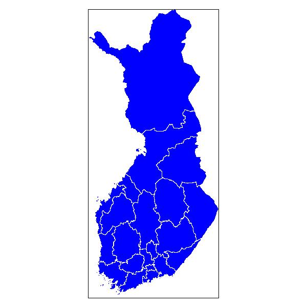

|
soRvi - avoimen datan työkalupakki R-kielelle
Julkisten tietoaineistojen määrä on ollut voimakkaassa
kasvussa. Talouteen
ja yhteiskuntaan, säähän,
liikenteeseen, paikkatietoon, koulutukseen ja muihin
alueisiin
liittyvissä avoimen
datan hankkeissa dataa on alettu avaamaan julkishallinnon toimesta
Suomessa ja
muualla. Aineistojen pöyhintä voi
avata uusia näkökulmia ja avoimuus mahdollistaa yhdistämisen toisiin
tietolähteisiin, jolloin voidaan vastata kysymyksiin joihin
yksittäisillä aineistoilla ei päästä käsiksi. Laaja saatavuus ja
käyttö on omiaan nostamaan yhteisten tietovarantojemme arvoa.
Laskennallisten työkalujen saatavuus on osoittautunut
pullonkaulaksi avointen datojen laajemmalle käytölle.
Tämä projekti yhdistää voimavaroja tarjoamalla keskitetyn kokoelman
yleiskäyttöisiä avoimen lähdekoodin välineitä yhteiskunnan avointen
tietovarantojen keskitettyyn hakuun, putsaamiseen, analysointiin,
yhdistelyyn ja visualisointiin. Projekti keskittyy erityisesti
suomalaiseen avoimeen dataan ja sen tarjoamat välineet helpottavat
tehokkaiden tiedonlouhinta-algoritmien soveltamista julkisiin
tietolähteisiin ammattimaisessa laskentaympäristössä. Valmiiden
hakurutiinien ansiosta monipuoliset aineistot ja tehokkaat
analyysimenetelmät ovat välittömästi yhdistettävissä ilman hankalia
esikäsittelyvaiheita. Projekti perustuu
laskennalliseen R-kieleen,
jota käytetään laajalti tutkimus- ja yritysmaailmassa.
Projekti palkittiin vuoden
2011 Apps4Finland-kisassa
Datan avaus-sarjassa sekä virallisen kisan että yleisöäänestyksen
ykköspalkinnolla
(kilpailutyö).
|
 |
|
Käyttöönotto
Linkkejä
Tekijät
Projektin taustalla ovat
Leo Lahti, Juuso Parkkinen
ja Joona Lehtomäki. Uudet tekijät ovat tervetulleita, kehittäjät
tavoitat sähköpostilla sorvi-commits .. at
.. lists.r-forge.r-project.org tai IRCnetin kanavalta !louhos
|